Create a new report from an existing report
Create a copy of a report
If you have a report, or find a report that is close to your needs, you may copy the report. You may then use the new copy of the report and change or edit it.
If the selected report includes parameters (report options), you may need to edit the parameters as well.
In this example, the new report “My Debtor List” will be used to create the same report for Creditors.
To create a copy of a report:
- On the "Report man" screen, select the report you wish to copy.
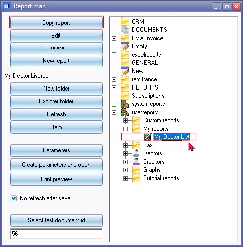
- Click on the Copy report button. An exact copy of the selected report, e.g. "Copy of My Debtor List", will be created.
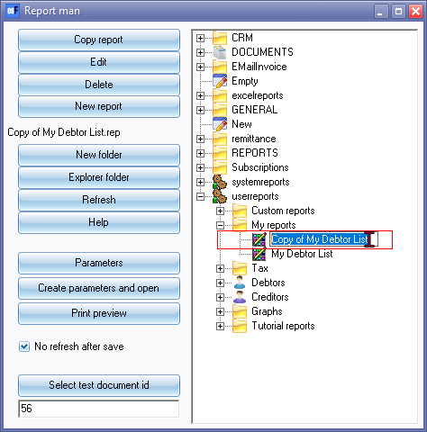
- Click twice on the "Copy of My Debtor List" report and rename the report, e.g. "My Creditor List".
|
|
You may select your new report and click on the Print preview button to check and test your report. It should work exactly as the source report from which it is copied. |

|
|
You may proceed to edit your copied report. |

Edit the report and parameters
There are two options to edit the copied report:
- Edit the parameters first and edit the report after the parameters; or
- First edit the report and then the parameters
In this example the parameters will be edited first and the report last.
The parameters need to be changed from debtors to creditors.
In this example, the report will be printed for debtor (customer / client) accounts. The basic layout and parameters needs to be edited to print the details for creditor (supplier / vendor) accounts. To do this some SQL needs to be changed on some Datasets in the report and on the parameters.
Edit the parameters
In this example, the following parameters needs to edited (changed):
- Sequence - Edit the list combo box parameter from "Debtor code" to "Creditor code".
- Groups - Replace "Reporting group 1" list combo box parameter "Debtor groups 1" with "Creditor groups 1".
- From account … To - Change the Account lookups from “OD Lookup Debtors” to “OC lookup creditors”.
To edit the parameters:
- On the "Report man" screen, select the report from which you need to edit the parameters.
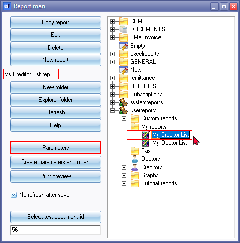
- Click on the Parameters button. This will launch the "Report options" parameter screen for the selected report.
Edit the Sequence parameter
Edit the list combo box parameter from "Debtor code" to "Creditor code".
To edit the Sequence parameter:
- On the "Report options" parameter screen, select the "Sequence" parameter.
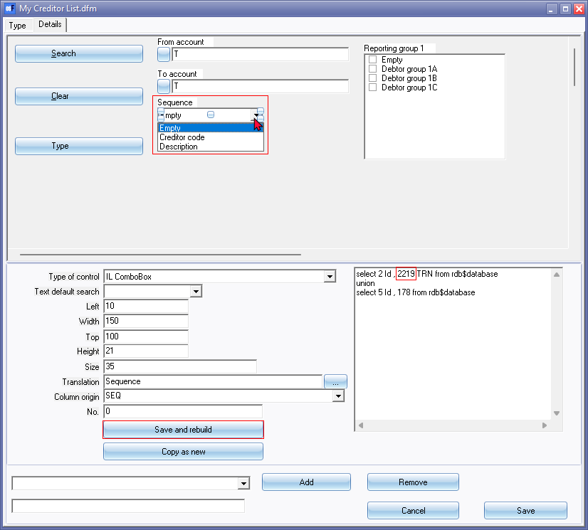
- In the Sql section – Change the language id "Debtor code" “2218” to "Creditor code" language id “2219”. After changing the SQL, the SQL should read as follows:
"select 2 Id , 2219 TRN from rdb$database
union
select 5 Id , 178 from rdb$database"
- Click on the Save and rebuild button. This will replace "Debtor code" with "Creditor code".
- You could proceed to edit (change) the Reporting group 1 parameters or click Save and reopen the Parameter screen.
Edit the Groups parameter
In this example, the "Reporting group 1" parameter needs to be changed from "Debtor groups 1" to "Creditor groups 1".
To edit the Reporting group 1 parameter:
- On the "Report options" parameter screen, select the "Reporting group 1" parameter.
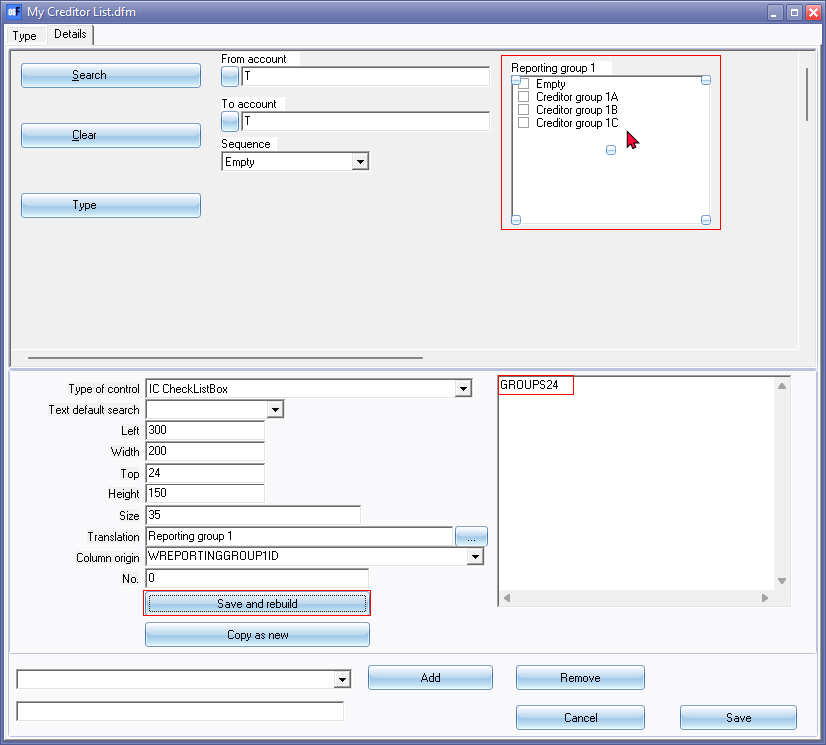
- In the Sql section – Change the GROUPS22 ("Debtor group 1") to GROUPS24 ("Creditor group 1"). After changing the SQL, the SQL should read as follows:
"GROUPS24"
|
|
22 after GROUPS is the WTYPEID = 22 for Debtor group 1 (SDESCRIPTION). These WTYPEID's is located in the V_TYPES table. Changing this to GROUPS24 will replace and list Creditor group 1. See - Reportman - References - Groups for a list of all Reporting groups in the V_TYPES table. |
- Click on the Save and rebuild button. This will replace list of the "Debtor groups 1" with "Creditor groups 1".
- You could proceed to edit (change) the Lookup parameters or click Save and reopen the Parameter screen.
Edit the Lookup parameters
In this example, the Account lookups from “OD Lookup Debtors” to “OC lookup creditors” and Account types in the SQL needs to be changed.
To edit the From account ... To parameters:
- On the "Report options" parameter screen, select the "From account" parameter.
- SQL section – Change the account type id in the SQL from
“ALL and WAccountTypeid = 1”
to
ALL and WAccountTypeid = 2”
This will only list all the Creditor accounts Account type 2.
- Select the To account parameter and set the Account type to 2.
- Type of control – Change the “OD Lookup Debtors” to “OC lookup creditors” in the To account parameter. Change the Type of control in the From account parameter.
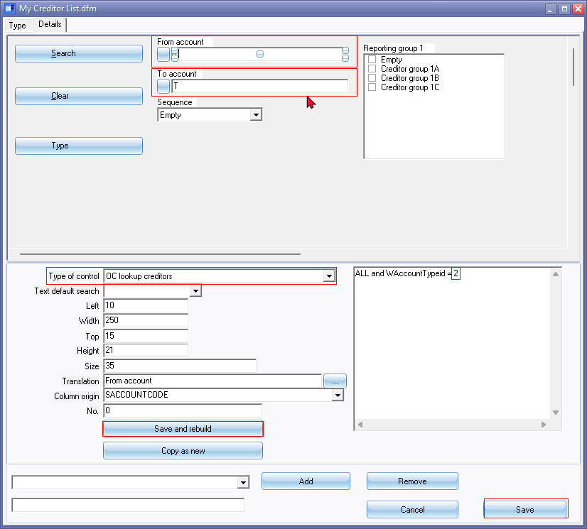
- Click on the Save and rebuild button.
|
|
If you have selected the Type of control and click on the Save and rebuild button, before changing the Account types in the SQL section, for both the From account and To account parameters, the SQL section will not be available. You need to click on the Save button. Then you need to click on the Parameters button of the "Report man" screen to set the Account type from 1 to 2. |

- You should be able to click on the lookup buttons to check if the "Creditors" lookup is launched.
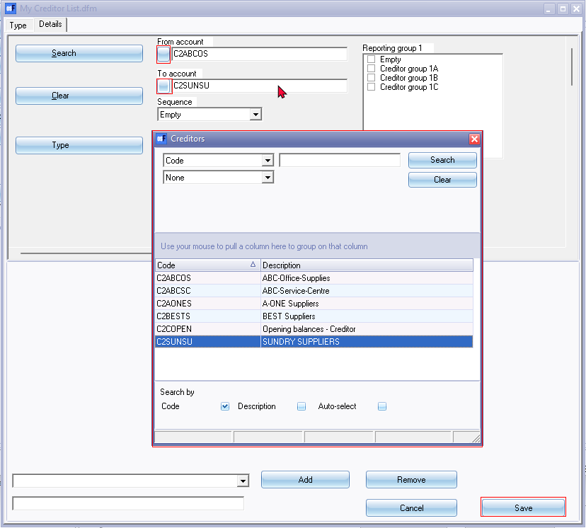
- Click on the Save button.
|
|
You may proceed to edit your copied report. |
Edit the report
In this example, the report will be printed for debtor (customer / client) accounts. The basic layout and parameters needs to be edited to print the details for creditor (supplier / vendor) accounts. Once the parameters (report options) is saved, some SQL needs to be changed on some Datasets in the report.
To edit the copy of a report:
- On the "Report man" screen, select the report you wish to edit.
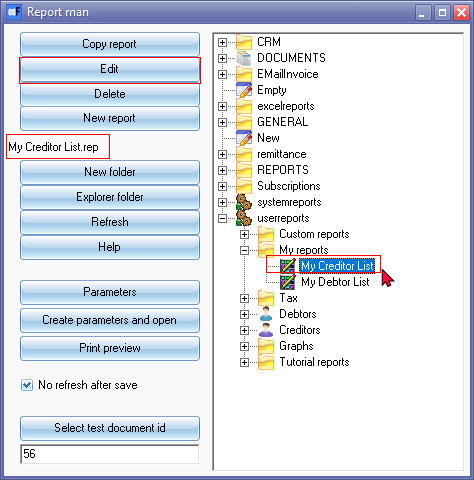
- Click Edit button. (You may double-click on the selected report (e.g. "My Creditor List") report).
- This will launch the "Report manager designer" screen for the selected report.
Edit ACCOUNT Dataset
On the “ACCOUNT” Dataset need to replace the debtor table with the creditor table.
To edit the ACCOUNT dataset:
- On the "Report manager designer" screen for the selected report, click on the Database connections and datasets icon.
- Select the "ACCOUNT" dataset.
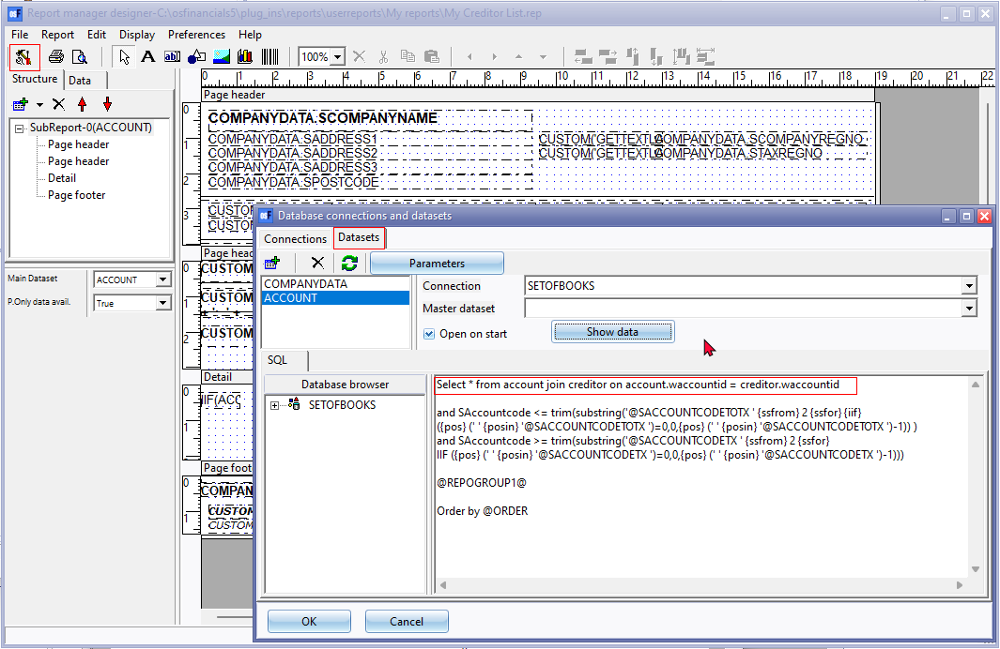
- On the Dataset “ACCOUNT” you need to replace the debtor table with the creditor table.
The existing SQL is as follows:
“Select * from account join debtor on account.waccountid = debtor.waccountid”
The changed SQL should be as follows:
“Select * from account join creditor on account.waccountid = creditor.waccountid”
- If you click on the Show data button, the data from the creditor table will be listed.
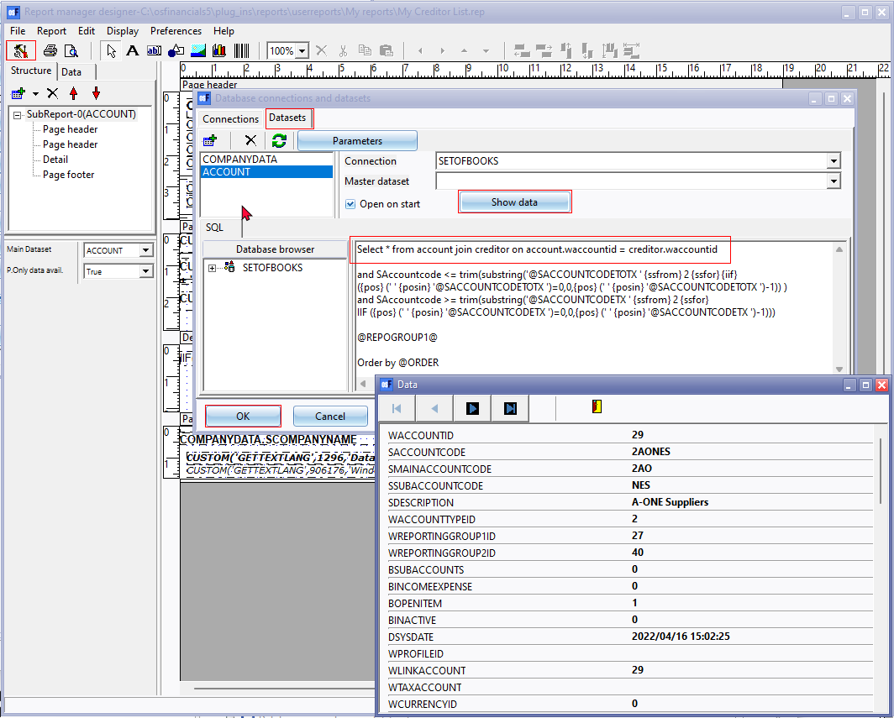
- Close the "Data" screen.
- Click OK on the "Database connections and datasets" screen.
- Click on the Print preview icon. The Creditor data is displayed on the report.
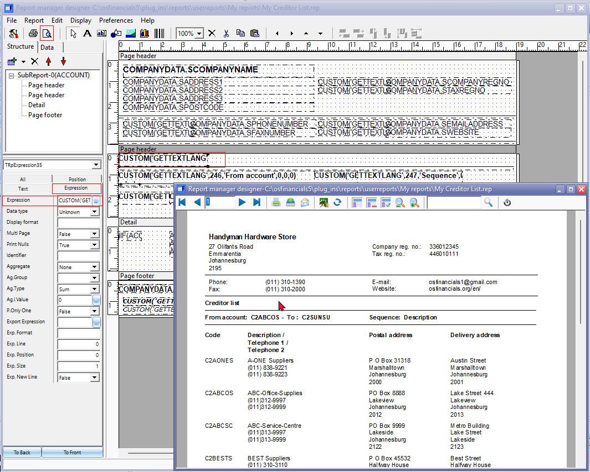
|
|
If no selection was made, and the Show data button does not show any data, and you click on the Print preview icon (on the "Report manager designer" screen, the following error message will be displayed: "No data available to print!" Click OK on the message screen. Exit the report and remember to Save the report. On the "Report man" screen select your report and click on the Print preview button. Select the options on the parameters screen. On the "Report man" screen select your report and click on the Edit button. The data should be available to preview. |
- The data of the creditor (supplier / vendor) accounts is displayed on the report. The only change that is required on this report is the report name in the second Page header.
- To change the Expression for the report name, select the expression and edit the SQL:
Report name – Debtor list – Expression:
CUSTOM('GETTEXTLANG',906045,'Debtor list',0,0,0)
Change to – Creditor list – Expression:
CUSTOM('GETTEXTLANG',906046,'Creditor list',0,0,0)
- Close the report preview screen.
- Close the report. Remember to Save the report.
|
|
Whenever you close the "Report manager designer" screen, after editing your report, remember save the report. If you click on No, on the "Save report?" confirmation message, your changes will be discarded (lost). |

Test the report and parameters
The final stage is to test the parameters to check if it works correctly and to check the general layout of the printed report.
To test the print preview of the report:
- On the "Report man" screen, select the report you wish to test.
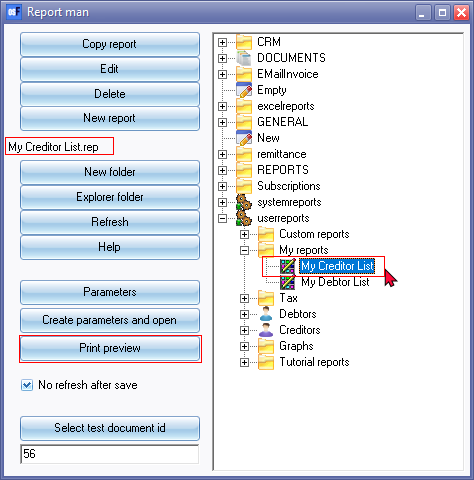
- Click on the Print preview button. The report options (parameters) is displayed:
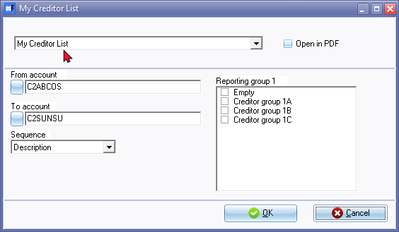
- Select the options:
- From account ... To account - This will launch the Creditors lookup. Select the creditor customer (supplier / vendor) (account(s) to include in the report.
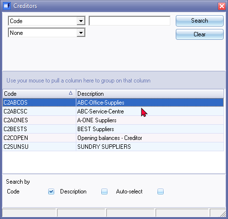
- Sequence - Select "Creditor code" or "Description".
- Reporting group 1 - Leave blank to list all accounts. You may tick a specific group or groups on the list in Reporting group 1 list box to print only those accounts linked to the specific reporting group.
- Click OK. An example of the printed report is as follows:
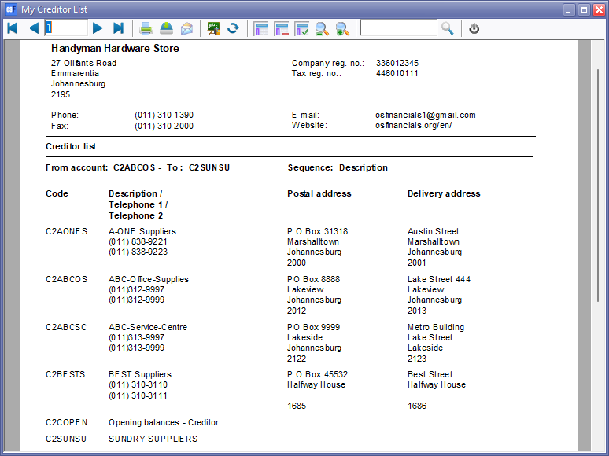
- Close the "Print preview" of the report and close the report options screen.
|
|
You may proceed to print the report from the User reports menu (Reports ribbon). |
Check the report in PDF format
Once you are satisfied that your report is displayed correctly in the printed format, you may check the layout and presentation in PDF format. Should you wish to make any changes, you may edit the report.
To check the report in PDF format:
On the Report options screen, select the "Open in PDF" option.

Select the options to include in the report and click OK. The report will be opened in your system's default PDF-program (In this example, it is "Microsoft Edge"):
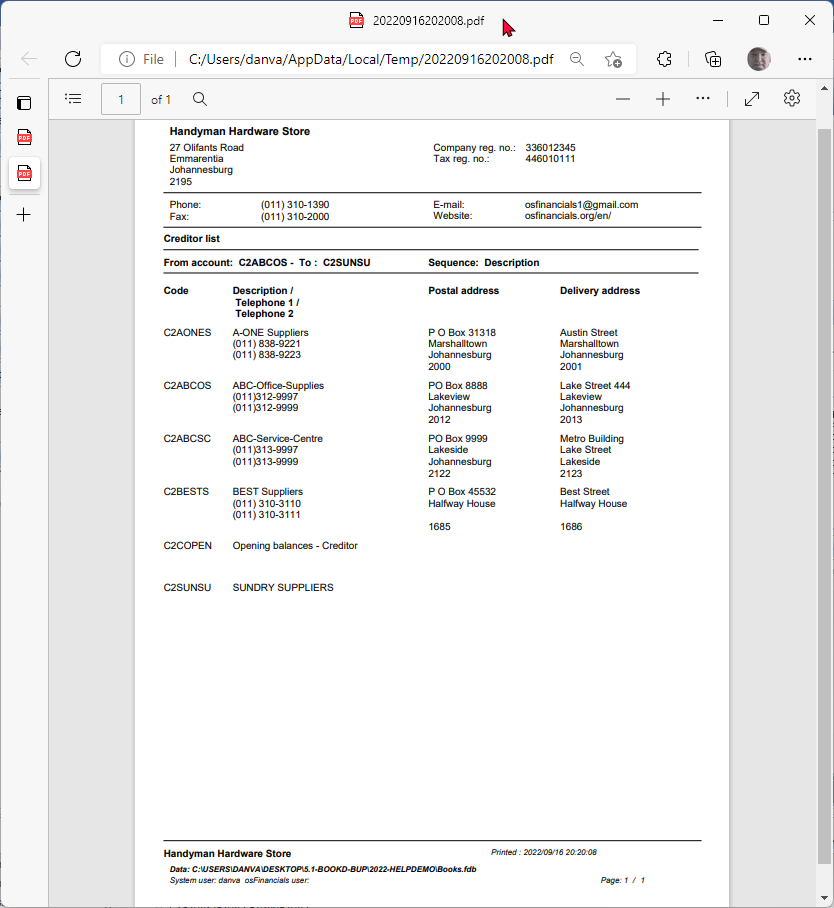